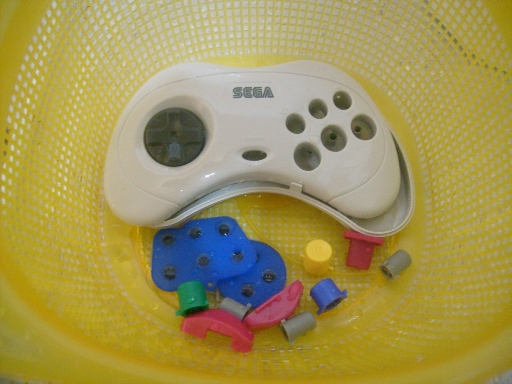

Saturn - Como restaurar a
aparência de um joystick branco
 :::. Por Gigacom - Dia
desses, comprei um Saturn branco para substituir o ultimo que teve a
unidade ótica pifada (é que eu jogo muito Saturn sabem
:::. Por Gigacom - Dia
desses, comprei um Saturn branco para substituir o ultimo que teve a
unidade ótica pifada (é que eu jogo muito Saturn sabem e
unidade ótica alguma é feita pra durar pra sempre), e
junto com ele veio um daqueles controlinhos brancos do padrão
japonês, só que o bichinho além de arranhado, tava
uma nhaca! Quando pegava nele meus dedos ficavam até meio
grudados na sujeira, um verdadeiro nojo. Não deu outra, o
controle foi pra mesa branca receber a limpeza devida, e olha
só! Não é que ficou novinho!?
e
unidade ótica alguma é feita pra durar pra sempre), e
junto com ele veio um daqueles controlinhos brancos do padrão
japonês, só que o bichinho além de arranhado, tava
uma nhaca! Quando pegava nele meus dedos ficavam até meio
grudados na sujeira, um verdadeiro nojo. Não deu outra, o
controle foi pra mesa branca receber a limpeza devida, e olha
só! Não é que ficou novinho!?
_______________________________________________________________________
Como disse, o controle tava um nojo de tão sujo. Grudento, feio, cheio de arranhões... o conector tava com restos de alguma coisa que foi colada ali, e tambem estava bem arranhado... o cabo tava melequento tambem, sujo que nem pata de cachorro depois de passear numa fazenda após uma chuva.
Dei uma boa olhada antes de abrir, para me certificar bem de todo o estado do controle e onde deveria focar a limpeza. A parte de trás do controle iria precisar de uma boa limpada, e o conector tambem. O controle já havia sido aberto pois havia marcas nos parafusos que indicavam isso, então esperava encontrar coisa pior dentro do controle. Chave estrela em mãos,desparafusei tudo. Ao abrir... surpresa!
As larerais do controle estavam beeeeeeeeeeeem encardidas. Tinha uma sujeira escura ali (olhem a primeira foto), porém o controle em si estava perfeito por dentro, a plaquinha estava nova, as borrachas tambem... só o resto é que tava sujo mesmo. Separei tudo, coloquei as partes plásticas dentro de uma vazilha e lá fui limpar tudo.
Como sempre costumo fazer, limpei primeiro com a parte macia da esponga e usei a escovinha para tirar a sujeira das partes onde há alguma coisa em alto relevo como naquelas incrições atrás do controle. Para retirar s sujeira dos arranhões, tive que usar a parte aspera da esponja... não há outro jeito de remover esse tipo de sujeira a não ser assim. Claro, uso com todo o cuidado concentrando as esfregadas bem em cima dos arranhões, e como estava MUITO sujo, levei um tempo até tirar a sujeira toda dos arranhões tanto de trás quanto da frente. A gosma verde que estava na lateral, tirei rapidinho usando a escova. Abaixo, um antes e depois:
Os botões tambem estavam encardidos, e mais uma vez a escova entrou em ação. Fiz tudo prestando o máximo de atenção para remover toda a sujeira das partes em baixo relevo que forma as letras A, B, C... dos botões. Depois de mais um tempinho dedicado somente à isso, passei a limpar as borrachas dos contatos. Felizmente, não havia rasgos ou desgaste execissivo, e só uma poeirinha estava por ali. Outro local que precisou de mais um tempo para limpar, foi o direcional. É possivel desmotar todo o direcional, mas há o risco de se quebrar os encaixes, por isso deixei montadinho como estava, e realizei a limpeza usando a escova. Feito a limpeza, juntei tudo dentro de escorredor e fiz o enxague.

Agora faltava o cabo e o conector... precisei ser mais radical nesse ponto. Mergulhei o cabo e o conector dentro de uma bacia com água e sabão, tomando cuidado apenas para não molhar a placa do controle que é atarrachada ao cabo. Limpei o cabo com a esponja, rapidinho ele voltou a ficar num tom cinza claro. Já o conector... bem, ele teve uma conversinha com a parte aspera da esponja durante um tempo...
Tá,
antes que um ultra conservador diga que molhar o conector é uma
abominação imperdovável, explico mais uma vez:
NÃO HÁ PROBLEMA EM MOLHAR O CONECTOR POMBAS !
É só secar bem o bicho antes de ligar de novo no video
game. Só isso, não vai acontecer nenhum desastre, fiquem
tranquilos. Aliás, continuem lendo para ver o que acontece.
!
É só secar bem o bicho antes de ligar de novo no video
game. Só isso, não vai acontecer nenhum desastre, fiquem
tranquilos. Aliás, continuem lendo para ver o que acontece.
Enfim, limpei bem o conector com a esponja, aproveitei tambem para limpar a parte da frente com os contatos, usando a escova. Lá dentro tinha um bocado de poeira e sujeira, e após a limpeza os contatos metálicos ficaram brilhando! Aproveitei tambem para dar uma lixadinha na parte de cima de metal do conector, pois havia uns principios de ferrugem ali. Nas fotos acima, à direita mostra o conector cheio de sabão, a da esquerda o resultado final.
Com tudo limpo, fui pra secagem. Tratei logo de tirar os excessos de águra apenas sacudindo bem o conector. Ficou sequinho, sem nenhuma gota. Passei um paninho seco em tudo, dei umas assopradas aqui e ali, outras sacudidas nas carcaças... deixei tudo à sombra fora de casa, mas ainda assim num ambiente quente. Uns 30 minutinhos depois, estava tudo perfeitamente seco. Juntei as peças em cima de uma mesinha, e comecei a remontagem.
O controle ficou muito branquinho depois de tudo. Os arranhões ficaram imperceptiveis, afinal, o que faz o arrnhão aparecer é a sujeira que fica nele. O conector ficou novo, sem ferrugem, sem sujeira, e branco novamente. Os boões... perfeitos! Parecem novos! O direcional ficou sem sinal algum de poeira, o cabo tá limpo que dá gosto. A gosma verde que estava na lateral do controle sumiu. Parecia que tinha acabado de desembalar o bichinho, tava perfeito! Agora, o teste...
Taí,
joguei Castlevania até enjoar. Depois ainda joguei um pouco de
Street Fighet Zero 2, em seguida um pouco de Panzer Dragoon 2,
aí fui pra Dragon Force... enfim, o controlinho que recebeu um
banho tá perfeito. E o conector? Inteirinho até hoje, a
ferrugem que tinha foi embora, e não apareceu nenhuma outra
ferrugem por conta da lavagem. Viram crianças como funciona o
esquema de limpeza do tio Giga? E mais um controle volta à vida,
feliz da vida .
.
Acesse o Trombone e comente sobre essa matéria!


Aqui, vou apresentar a restauração de um controle de SNES que comprei em péssimo estado numa feirinha da minha cidade, e que agora está lindinho funcionando perfeitamente. Confira as dicas, e faça uma restauração você também